A complete walkthrough of the LPA model — path analysis made local, so
that the coefficient linking climate to vegetation is allowed to differ between the northern
Qiangtang and the southeastern gorges instead of being averaged into one number for the whole
Tibetan Plateau. From Ripley's K to the published table, on the published case.
R/ pipeline scripts · config/project-config.R ·
data/lpa-tibetan-plateau.csv (1,801 sampling locations, the published case, carrying
both the observed variables and the authors' own output) · tests/ ·
run-all.R — unzip and run Rscript run-all.R test from the
LPA/ folder root.
To cite the LPA model and its codes in publications, please use:
Hu J, Qu R, Song Y, Wu P (2025). Local pathways of association.
International Journal of Applied Earth Observation and Geoinformation 139:104531.
doi ·
PDFopen access
Rosseel Y (2012). lavaan: an R package for structural equation modeling.
Journal of Statistical Software 48(2):1–36.
doi ·
CRAN
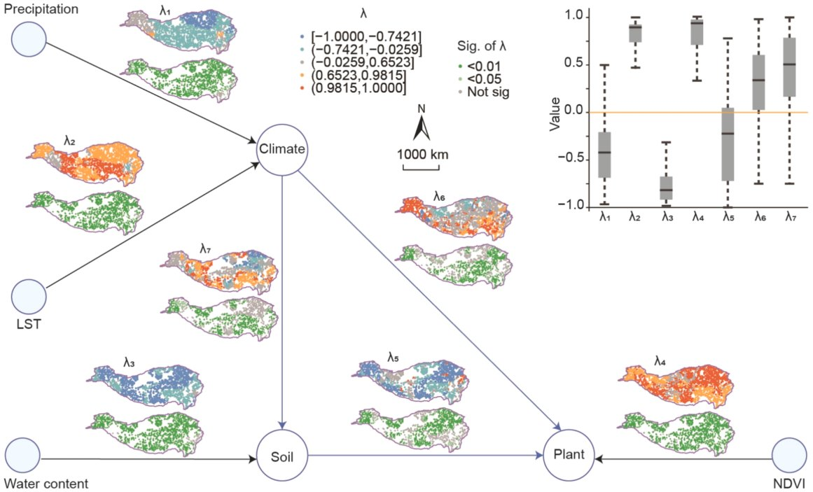
1 Method Overview & Reproduction Scope
1.1 Core Idea
Path analysis answers a question correlation cannot: not whether climate and vegetation move
together, but how much of that movement runs through soil. A structural equation model estimates
the strength of each arrow in a hypothesised causal diagram, and reports it as a path
coefficient λ.
Over a study area the size of the Tibetan Plateau, one λ per arrow is a claim that the same
causal chain operates the same way at every location — from the monsoon-fed southeastern gorges to
the cold desert of the northwest, 3,000 km away. LPA drops that assumption. It fits the
same structural equation model separately inside a neighbourhood around every location, so each
arrow becomes a surface rather than a scalar, and the variation of that surface becomes the
result.
Research problem: path coefficients estimated globally absorb regional differences
into an average, and the average can be an artefact — the paper's own λ for climate on soil
runs from −0.969 to 0.997 across space while the global model reports a single 0.677.
One-line contribution: LPA determines a local range from the data with Ripley's K,
estimates the structural equation model inside that range at every location, and maps the
resulting path coefficients and their significance.
Why it matters: a global coefficient tells you a relationship exists somewhere; a
local one tells you where, and where it reverses. On this case, three of the seven pathways
are significant at fewer than 71 % of locations, which a single starred coefficient in
a conventional SEM table would never reveal.
Published reference · LPA
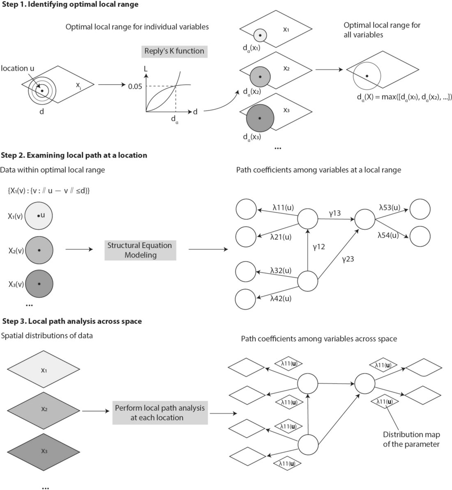
Paper Fig. 1 — the model in three steps. Ripley's K fixes the local range from the
spatial arrangement of the data; the structural equation model is estimated inside that range;
the estimation is repeated at every location so each path coefficient becomes a map.
Click to enlarge.
Hu, Qu, Song & Wu (2025), IJAEOG 139:104531 (open access, CC BY).
1.2 Method Logic
Step 1Ripley's K and Besag's L give the optimal local range ropt = 705.29 km here
→
Step 2SEM inside the neighbourhood of one location lavaan::sem() on ~596 neighbours
→
Step 3Repeat at every location; each λ becomes a surface
1,801 fits → 7 maps
Key concepts and equations
Ripley's K counts neighbours at a distance. For a distance r, K(r) is the expected
number of further points within r of a typical point, scaled by the study area A and the
point count n:
K(r) = (A/n²) Σi Σj≠i I(dij ≤ r)
Under complete spatial randomness K(r) = πr². Anything above that is clustering.
Besag's L makes it readable, and its peak is the local range. The square-root
transform turns the quadratic expectation into a straight line at zero, so the curve can be
read directly:
L(r) = √(K(r)/π) − r ropt = arg maxr L(r)
L(r) > 0 means the points are more clustered than random at that distance, and the
distance at which L peaks is the scale at which spatial interaction is strongest. That
distance becomes the radius of every local model.
The local structural equation model. At location u, only the observations within
da(Xi) of u enter the fit:
{Xi(v) : ‖u − v‖ ≤ da(Xi)}
Inside that window the usual path equations apply, with every coefficient now carrying the
location as an argument:
Estimation is ordinary maximum likelihood, λ̂ = arg minλ Σ(yi − ŷi)². Nothing about
the estimator is new — the locality lives entirely in which rows are passed to it.
Across space, λ becomes a function of position. Repeating the fit at
u1 … un yields λij(u) = f(u), a surface
that can be mapped, summarised and significance-tested like any other spatial variable.
◆How local is "local" here
The estimated range of 705 km puts a median of 596 of the 1,801 locations inside every
neighbourhood — a third of the study area per fit. Neighbouring models therefore share most of
their data, which is what makes the resulting surfaces smooth, and also what stops any single
map cell from being an independent observation. The radius is the method's main free choice,
and R/50-radius-sensitivity.R exists to keep that choice visible.
1.3 Reproduction Scope
This page reproduces two different things, and keeping them apart is the point.
What
Against
Result
Table 2 — all seven pathways, mean [min, max] and share significant
the authors' published output file
exact, 28 of 28 printed figures
Fig. 4 — the optimal local range
the published 707.29 km
705.29 km, a difference of 0.3 %
Fig. 5 — the seven coefficient maps, their significance maps and the boxplot
the published output file
redrawn, same class breaks
The authors' violin plot
the attached result with LSEM.R
redrawn as written
The λ surfaces themselves, refitted from the observed variables
the published λ, location by location
partial — see §3.3 Step 3
What this page reproduces, and against what. The published Table 2 values are matched exactly; the optimal local range differs by 0.3 % because it is re-estimated rather than read off.
!What is reconstructed rather than reproduced
The article states the LPA model but not the structural equation specification behind its
numbers, and the code released with it draws the violin plot rather than estimating the
pathways. The specification used here is therefore inferred from the output file
(§2.4). It recovers the sign and the spatial pattern of the published surfaces; it does not
recover the individual estimates. Everything on this page that depends on that inference is
labelled as a refit, and everything labelled exact depends only on the authors' own numbers.
How to use this page
Read §2 to get the pipeline running, then §3.2 to confirm it reproduces the published table
before trusting anything else it prints. §3.3 walks the method one step at a time, each with the
code, the console output it produces and the figure it draws. §4 is for porting the
model to another study area.
2 Setup, Structure & Data Contract
2.1 Environment & Dependencies
Two packages carry the method: spatstat.explore for Ripley's K and
lavaan for the structural equation model. Neither is called through a wrapper — LPA
is an arrangement of standard tools rather than a new estimator, which is why it ports easily to
other disciplines.
R console
# The two that do the work
install.packages(c("lavaan", "spatstat.explore", "spatstat.geom"))
# Figures
install.packages(c("ggplot2", "patchwork"))
Package
Role in the pipeline
Version
spatstat.explore, spatstat.geom
Kest() with edge correction, and the observation window it is corrected against (Step 1)
3.8.1 / 3.8.2
lavaan
sem() and standardizedSolution() at every location (Steps 2–3)
0.7.2
ggplot2
every figure
4.0.3
patchwork
the two-panel K and L figure only
1.3.2
base R
distances, neighbourhoods, the convex hull outline, the summaries
4.6.0
Package roles and the versions the pipeline was run with. Only spatstat and lavaan do analytical work; the rest draw figures.
✓No spatial data stack required
The pipeline reads a plain CSV of coordinates and variables, so sf,
terra and GDAL are not needed. Distances are Euclidean on an equirectangular
plane, which is the convention that reproduces the published range; if your study area spans
more latitude than this one, project the coordinates properly before Step 1 and set
PROJECTION <- "degrees" so the pipeline leaves them alone.
2.2 Project Structure & Configuration
LPA/
LPA/
├── run-all.R one command runs everything
├── config/project-config.R the only file you edit to port the model
├── R/
│ ├── 00-config.R 01-helpers.R paths, logging, neighbourhoods, the local fit
│ ├── 10-prepare-data.R read, project, describe
│ ├── 20-optimal-range.R Ripley's K -> r_opt (Step 1)
│ ├── 30-local-sem.R one SEM per location (Steps 2-3)
│ ├── 40-reproduce-published.R rebuild Table 2, then test the refit
│ ├── 50-radius-sensitivity.R how much the radius decides the answer
│ ├── 90-tables.R LaTeX tables
│ └── p01..p04 figures
├── data/
│ ├── lpa-tibetan-plateau.csv 1,801 locations, the published case
│ ├── LSEM_out.xlsx the same data as the authors distributed it
│ ├── original-violin-plot.R the authors' own plotting script, unedited
│ └── derived/ points.rds, r-opt.rds, neighbour counts
├── results/ tables/ figs/ everything the pipeline writes
├── tests/ 31 assertions against the paper, 10 on the method
├── env/ session info, package versions
└── assets/ reference figures from the article
Every choice the method makes is a named constant in one file. Porting the model to another
study area means editing config/project-config.R and nothing else.
config/project-config.R · the parts that matter
# -- Input ---------------------------------------------------------------
INPUT_FILE <- "data/lpa-tibetan-plateau.csv"
COORD_X <- "x" # longitude, decimal degrees
COORD_Y <- "y" # latitude, decimal degrees
# -- The optimal local range ---------------------------------------------
# Edge correction matters more than anything else here: with no correction
# the L curve peaks at roughly half the published distance.
K_CORRECTION <- "border" # "border", "isotropic" or "none"
K_WINDOW <- "rectangle" # bounding box, or "hull"
K_R_MAX <- 1200 # km, upper end of the search grid
MIN_LOCAL_N <- 60 # a fit needs enough neighbours to be worth trusting
RADIUS_OVERRIDE <- NULL # set a number to force a radius
RADIUS_SENSITIVITY <- c(400, 500, 600, 705.29, 800, 900)
# -- The structural equation model ---------------------------------------
SEM_MODEL <- '
Plant =~ EVI + NDVI
Climate =~ T + LST + P
Soil =~ PH + watercontent
Soil ~ Climate
Plant ~ Climate + Soil
'
# -- Reporting conventions -----------------------------------------------
LAMBDA_PLOT_RANGE <- c(-1, 1) # the filter Table 2 and Fig. 5 apply
SIG_LEVEL <- 0.05
2.3 Data Contract
One table, one row per location. Columns 1–2 are the coordinates, columns 3–11 the observed
variables, and the remaining 14 are the authors' own output — seven path coefficients and their
p-values — which is what makes an exact reproduction of Table 2 possible at all.
Column
Meaning
Source
x, y
longitude and latitude, decimal degrees; 67.95–104.11 E, 26.21–39.80 N
random sample, ≥2 km apart
NDVI, EVI
vegetation indices, 2000–2020 trend
MODIS MOD13A1, 500 m
LST, P, T
land surface temperature, precipitation, temperature
ERA5-Land, 11 km
watercontent, PH
soil water at 33 kPa and soil pH, 10 cm depth
OpenLandMap, 250 m
elevation, slope
terrain, present in the file but used by no pathway in Fig. 5
—
P_climate … climate_soil
the seven published λ, in the order λ₁…λ₇ of Fig. 5
the authors' LPA run
sig.P_climate … sig.climate_soil
the matching p-values
the authors' LPA run
Data contract for data/lpa-input.csv. The last fourteen columns are the authors' own published output, which is what makes an exact reproduction of Table 2 possible.
Every observed variable arrives standardised — mean 0, standard deviation 1 to machine
precision — so no scaling happens in the pipeline, and a coefficient outside [−1, 1] is a
property of the fit rather than of the units.
Published reference · LPA
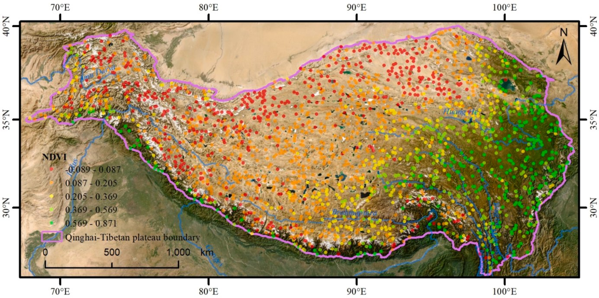
Paper Fig. 2 — the study area and the sampling design the file encodes: points spread
across the plateau at least 2 km apart, each carrying the median value within a 2 km
buffer, coloured here by NDVI. The east–west span of roughly 3,300 km is what makes a single
global path coefficient hard to defend. Click to enlarge.
Hu, Qu, Song & Wu (2025), IJAEOG 139:104531 (open access, CC BY).
!Three gaps in the published output, all reproduced faithfully
1,801 locations, not the 2,000 the article describes. The distributed file is what
the pipeline reads, so every number here rests on 1,801.
328 locations have no λ at all, and only 1,283 carry a complete set of
p-values. The share-significant column of Table 2 is computed over those 1,283, not over all
1,801 — getting this denominator right is what makes 94.39 %, 70.07 % and the rest
come out to the printed decimal.
A quarter of the estimates fall outside [−1, 1], reaching +3,910 on the
climate-to-plant path. Table 2 and Fig. 5 describe only the estimates inside that window,
which is the filter the authors' own script applies. figs/fig07 shows how much of
each pathway that removes.
2.4 The Model Specification, and Why It Is a Reconstruction
Fig. 5 of the article draws the model: four measurement arrows into three latent variables, and
three structural arrows between them. Read literally, it does not identify.
Published reference · LPAPaper Fig. 5 — the result this page reproduces. Each arrow of the path diagram
carries two maps: the local coefficient λ and its significance. The boxplot at the top right
summarises all seven. Black arrows are measurement relations between an observed variable and
its latent; blue arrows are structural relations between latents. Click to enlarge.
Hu, Qu, Song & Wu (2025), IJAEOG 139:104531 (open access, CC BY).
A latent variable measured by a single indicator — Plant by NDVI alone, Soil by
water content alone — has its loading fixed at 1 by convention, because there is nothing to
estimate it against. The published output contradicts that in two places at once: the NDVI loading
varies from 0.004 to 1.000 across locations, and the water-content loading is negative at
most of them, averaging −0.763. Fitting the diagram as drawn confirms it — both loadings come back
as exactly 1.000 everywhere, and the structural coefficients blow up past ±900 as the optimiser
works on an underdetermined problem.
The data file resolves it. It carries three variables no arrow in Fig. 5 uses — EVI, T and PH —
and giving each latent a second indicator makes every loading free, negative loadings possible,
and the whole model identified:
the specification used here
SEM_MODEL <- '
Plant =~ EVI + NDVI # EVI is the reference indicator
Climate =~ T + LST + P # T is the reference indicator
Soil =~ PH + watercontent # PH is the reference indicator
Soil ~ Climate # lambda_7
Plant ~ Climate + Soil # lambda_6, lambda_5
'
The reference indicators are what the published signs imply. With temperature anchoring
Climate, land surface temperature loads positively (published mean +0.798) and precipitation
negatively (−0.370), which is the pattern of a cold arid plateau. With pH anchoring Soil,
water content loads negatively (−0.763). Fitted this way, the model returns coefficients of the
right sign and the right magnitude at most locations.
◆Treat this as a hypothesis, not a recovery
The reconstruction is consistent with everything observable in the released material, and it
is still a guess about a file that was never released. If you have the authors' original
lavaan specification, replacing SEM_MODEL in the config is the whole
change required — the pipeline reads the seven pathways from PATHS and needs no
other edit.
3 Reproduction Pipeline, Results & Validation
3.1 Pipeline Execution
Full run
Rscript run-all.R (~11 min, almost all of it Steps 30 and 50)
Verification
Rscript run-all.R test — 2 s, do this first
Output folders
results/ tables/ figs/ data/derived/
terminal
cd LPA # this folder
Rscript run-all.R test # 1. check against the published values (2 s)
Rscript run-all.R # 2. full pipeline (~11 min)
Rscript run-all.R 20 40 # re-run single steps (10 20 30 40 50 90)
Rscript run-all.R figures # only the figure scripts
Project : lpa-demo
Domain : Tibetan Plateau ecosystem (NDVI, LST, precipitation, soil water)
== Step 10 — prepare data ================================
1801 locations, 27 columns, coordinates in km
extent: 67.95 to 104.11 E, 26.21 to 39.80 N
plane : 3341 km east-west by 1503 km north-south
published lambda present at 1473 of 1801 locations (328 incomplete)
published p-values complete at 1283 locations — Table 2's denominator
== Step 20 — optimal local range =========================
L peaks at r = 705.29 km (correction 'border', rectangle window), L_max = 128.94
local range carried forward: 705.29 km (published 707.29 km, -2.00 km)
neighbourhood size: median 596, range 163-909; 0 locations below the minimum of 60
== Step 30 — local path coefficients =====================
radius 705.29 km, 1801 locations
finished in 441 s
converged at 1667 of 1801 locations (92.6 %)
== Step 40 — reproduce the published values ==============
7 of 7 rows reproduce every printed figure exactly
sign agreement 72-100 %, correlation -0.13-0.83 across the seven paths
Published reference · LPA
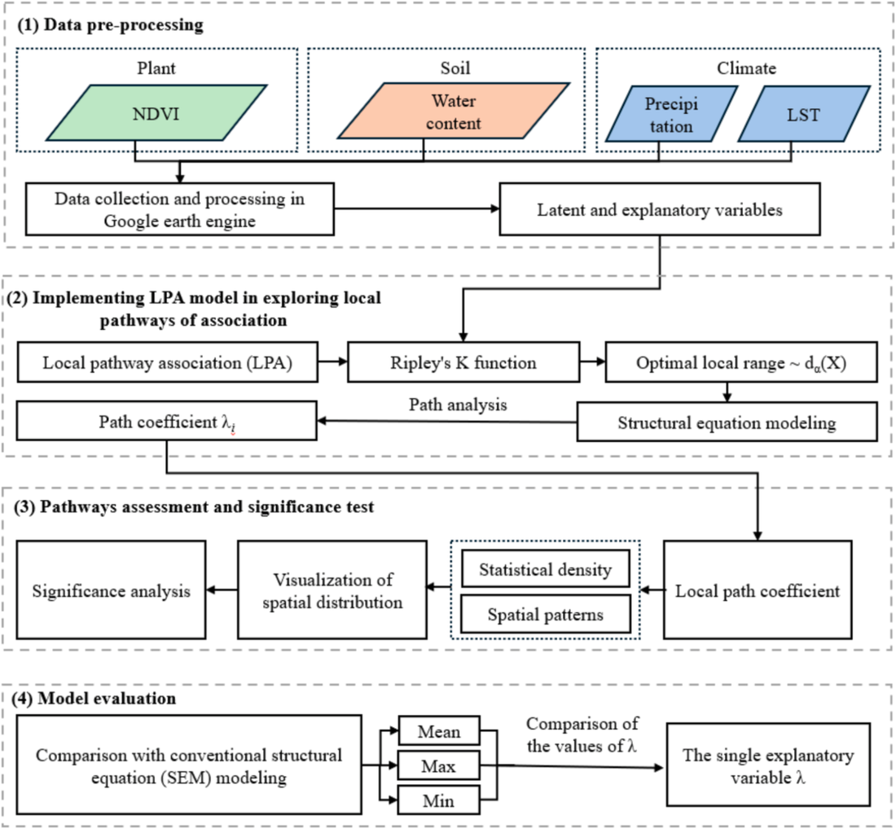
Paper Fig. 3 — the case study in four stages, and the map between the article and this
folder: pre-processing is R/10, the LPA model is R/20 and
R/30, assessment and significance are R/40 with the figure scripts, and
the comparison against conventional SEM is the last column of Table 2. Click to enlarge.
Hu, Qu, Song & Wu (2025), IJAEOG 139:104531 (open access, CC BY).
3.2 Reproduce the Published Values
Table 2 — reproduced exactly, once two conventions are right
Table 2 of the article validates LPA by putting the local coefficients beside the global ones.
Every figure it prints follows from the distributed output file, but only under two conventions
the table itself does not state, and both have to be right at once or nothing matches.
The summaries cover only λ inside [−1, 1]. This is the filter in the authors'
own plotting script. Applied to the raw columns instead, the mean for the climate-to-plant
path is +3.57 rather than the published +0.335.
The share significant is taken over the 1,283 locations with a complete set of
p-values, not over all 1,801 and not over the filtered subset. Using the filtered subset
instead moves four of the seven percentages off the printed value.
== test-01: published values ==================================
[ok] lambda1 mean got -0.370 want -0.370
[ok] lambda1 min got -0.967 want -0.967
[ok] lambda1 max got 0.747 want 0.747
[ok] lambda1 significant % got 94.388 want 94.390
[ok] lambda2 mean got 0.798 want 0.798
[ok] lambda3 mean got -0.763 want -0.763
[ok] lambda4 mean got 0.773 want 0.773
[ok] lambda4 min got 0.004 want 0.004
[ok] lambda5 significant % got 70.070 want 70.070
[ok] lambda6 significant % got 63.523 want 63.520
[ok] lambda7 significant % got 62.354 want 62.350
[ok] optimal local range (km) got 705.290 want 707.290
[ok] locations in the file got 1801.000 want 1801.000
[ok] locations with a complete set of p-values got 1283.000 want 1283.000
31 passed, 0 failed
every published figure reproduced
Path
Local λ, mean [min, max]
Significant (p < 0.05)
Global λ
Match
Variable relationship
λ₁ Precipitation =~ Climate
−0.370 [−0.967, 0.747]
94.39 %
−0.332**
exact
λ₂ LST =~ Climate
0.798 [−0.605, 0.999]
98.29 %
0.858**
exact
λ₃ Water content =~ Soil
−0.763 [−0.987, 0.430]
96.80 %
−0.895**
exact
λ₄ NDVI =~ Plant
0.773 [0.004, 1.000]
98.21 %
0.995**
exact
Latent variable relationships
λ₅ Soil ~ Plant
−0.269 [−0.998, 0.774]
70.07 %
−0.528**
exact
λ₆ Climate ~ Plant
0.335 [−0.994, 0.998]
63.52 %
0.267**
exact
λ₇ Climate ~ Soil
0.427 [−0.969, 0.997]
62.35 %
0.677**
exact
The seven pathways: local coefficient distributions, the share of locations where each is significant, and the published global coefficient beside each one. Every printed figure matches the published Table 2.
✓Checkpoint
42 assertions pass — 31 against the published article, 11 on properties the method must
satisfy regardless of dataset. If those hold, the pipeline is reading the case the authors
published and summarising it the way they did. On a fresh unpack the tests prepare what they
need and run 39 of the 42 in under a second; the remaining three compare against the local
fits, so they appear once Step 30 has run.
What the global column already tells you
Read the table's last two columns together and the argument for the method appears without any
map. Every global coefficient is significant at p < 0.01, yet the local range around it
crosses zero on six of the seven pathways. The global −0.528 for soil on plant is the average of a
surface running from −0.998 to +0.774, and the pathway is significant at only 70 % of
locations. The global estimate is not wrong; it is a summary of something that has no single
value.
3.3 Core Analytical Steps
Five stages: purpose → code → output → result → how to read it. Step numbers
match the script numbers (Step 1 is R/20-optimal-range.R).
Step 1
Identify the optimal local range
What this step does
Ripley's K counts how many neighbours a typical location has within each distance r, and
compares that count to what complete spatial randomness would give. Besag's L rescales the
comparison so it can be read against zero, and the distance at which L peaks is taken as the
range over which spatial interaction is strongest. That distance becomes the radius of every
local model in Steps 2 and 3, which makes this the single most consequential number in the
pipeline.
Code
R/01-helpers.R · the estimator
ripley_L <- function(d, correction = K_CORRECTION, window = K_WINDOW,
r_max = K_R_MAX, r_step = K_R_STEP) {
W <- if (identical(window, "hull"))
spatstat.geom::convexhull.xy(d$px, d$py)
else
spatstat.geom::owin(range(d$px), range(d$py))
pp <- spatstat.geom::ppp(d$px, d$py, window = W, checkdup = FALSE)
K <- spatstat.explore::Kest(pp, correction = correction,
r = seq(0, r_max, by = r_step))
col <- setdiff(names(K), c("r", "theo"))[1]
L <- sqrt(K[[col]] / pi) - K$r # Besag's L
i <- which.max(L) # the optimal local range
list(r = K$r, K = K[[col]], theo = K$theo, L = L,
r_opt = K$r[i], L_max = L[i], correction = correction)
}
Example output
== Step 20 — optimal local range =========================
L peaks at r = 705.29 km (correction 'border', rectangle window), L_max = 128.94
L is within 5 of its maximum from 687 to 723 km — the peak is a plateau 36 km wide
the border correction stops being reliable beyond 751 km
wrote results/ripley-k-curve.csv (1201 rows)
wrote results/optimal-range.csv (4 rows)
correction window r_opt_km L_max published_km difference_km selected
none rectangle 378.51 62.990 707.29 -328.78 FALSE
border rectangle 705.29 128.942 707.29 -2.00 TRUE
isotropic rectangle 805.99 98.027 707.29 98.70 FALSE
border hull 568.03 48.920 707.29 -139.26 FALSE
plateau_from_km plateau_to_km
NA NA
686.95 723.18
NA NA
NA NA
local range carried forward: 705.29 km (published 707.29 km, -2.00 km)
neighbourhood size: median 596, range 163-909; 0 locations below the minimum of 60
Demo run
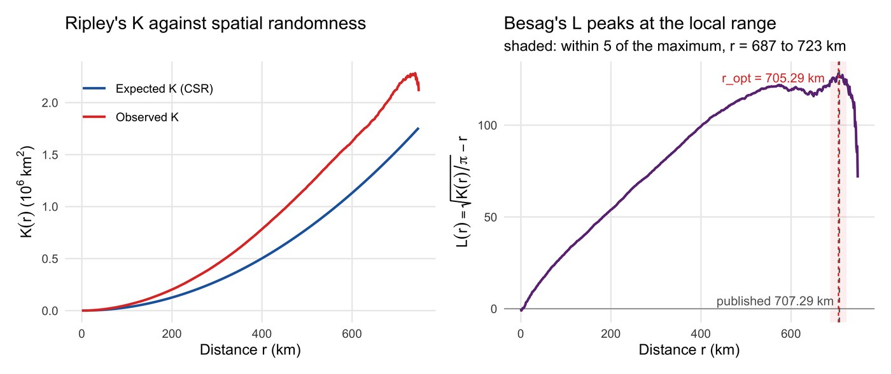
fig01 — observed K sits above the random expectation at every estimable
distance, and L peaks at 705.29 km. The shaded band marks the plateau within 5 units
of that maximum.Published reference · LPA
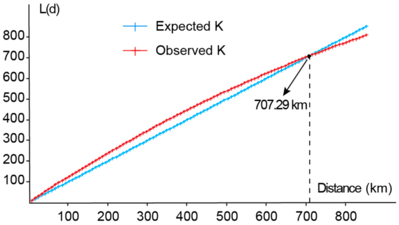
Paper Fig. 4 — the published counterpart, reporting a peak at
707.29 km.
Hu et al. (2025), IJAEOG 139:104531.
How to read this result
The reproduction lands 2 km from the published value, a difference of 0.3 %, and
that residual is a projection choice the article does not state: scaling longitude by
cos(latitude) gives 705.29 km, treating both axes at 111.32 km per degree gives
710.11 km, and the published number sits between them.
Agreeing to 2 km is less impressive than it sounds, and the shaded band in the figure
is why. L stays within 5 units of its maximum from 687 to 723 km, so the curve has a
plateau rather than a spike, and any radius in that 36 km window is an equally good
reading of the same data. The honest statement is that the published range and this one fall
on the same plateau — not that the third decimal was recovered.
◆Why the curve is cut short
The figure stops at 748 km although the search grid runs to 1,200. The border
correction only counts points whose whole neighbourhood of radius r lies inside the
window, and by 750 km almost none do: K falls from 2.28 million to 1.54 million in a
single step and L drops to −50. That last stretch is the estimator running out of data,
not the plateau ending, so trim_collapse() removes the collapsing tail before
plotting. The peak is unaffected — it sits 43 km before the cut — but a figure drawn
without the trim shows one cliff and nothing else.
!The edge correction is the result
Without a correction, pairs that fall outside the study window are simply never counted,
K is biased downwards, and the peak lands at 378 km — a local model built on
that radius would use a quarter of the data and answer a different question. Ripley's
isotropic correction gives 806 km. The convex hull as window gives
568 km. Only the reduced-sample border correction on the bounding box
reproduces the article. Report which one you used; the number means little without it.
Note also where the estimator stops: the border correction cannot estimate K beyond
750 km for this window, so the peak at 705 km sits 44 km inside the
limit of what is observable. tests/test-02 asserts that margin, because a
peak resting on the last estimable distance would be an artefact of the estimator rather
than a feature of the pattern.
Demo run
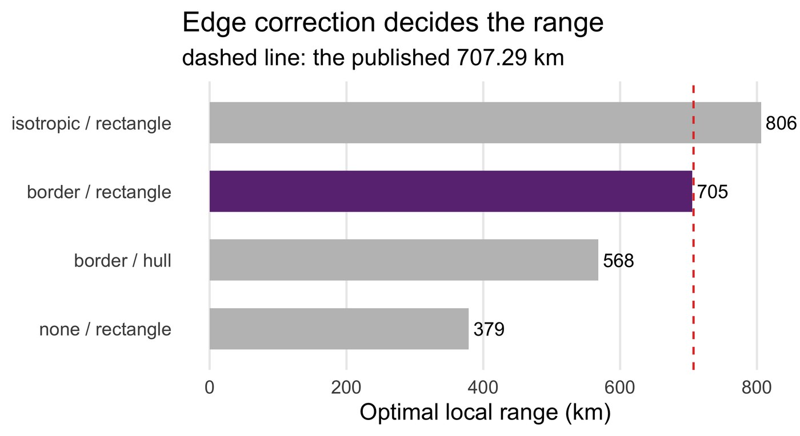
fig02 — the same data, four defensible estimation choices, four ranges between
378 and 806 km.
Step 2
Examine the local path at one location
What this step does
Around a single location, collect every observation within the radius and fit the structural
equation model to that subset alone. Nothing about the estimator changes — this is
lavaan::sem() exactly as it would be used on a whole dataset. What changes is
which rows it sees, and that is the entire methodological idea.
Code
R/01-helpers.R · the neighbourhood and the fit
# Every location within radius r of location i, itself included.
# This one line is what makes a path coefficient local.
neighbours_within <- function(d, i, r) {
which(sqrt((d$px - d$px[i])^2 + (d$py - d$py[i])^2) <= r)
}
fit_local_sem <- function(dat, model = SEM_MODEL, paths = PATHS) {
fit <- try(suppressWarnings(lavaan::sem(model, data = dat)), silent = TRUE)
if (inherits(fit, "try-error")) return(...) # keep NA, record why
if (!lavaan::lavInspect(fit, "converged")) return(...) # do not invent a number
est <- lavaan::standardizedSolution(fit)
# pull the seven reported pathways by their lavaan names
mapply(function(l, o, r) est$est.std[est$lhs == l & est$op == o & est$rhs == r],
paths$lhs, paths$op, paths$rhs)
}
Example output
lavaan 0.7-2 ended normally after 80 iterations
Estimator ML
Number of model parameters 17
Number of observations 596
Latent Variables:
Estimate Std.Err z-value P(>|z|) Std.lv Std.all
Plant =~
EVI 1.000 0.600 0.929
NDVI 1.135 0.020 58.059 0.000 0.681 1.052
Climate =~
T 1.000 0.291 0.484
LST 3.844 0.339 11.347 0.000 1.117 1.207
P -1.194 0.109 -10.909 0.000 -0.347 -0.409
Soil =~
PH 1.000 0.682 0.857
watercontent -1.203 0.042 -28.778 0.000 -0.821 -0.895
Regressions:
Estimate Std.Err z-value P(>|z|) Std.lv Std.all
Soil ~
Climate 1.438 0.114 12.618 0.000 0.612 0.612
Plant ~
Climate 0.707 0.078 9.070 0.000 0.343 0.343
Soil -0.662 0.049 -13.400 0.000 -0.753 -0.753
Warning message:
lavaan->lav_object_post_check():
some estimated ov variances are negative
How to read this result
The Std.all column is what LPA keeps. Four of its values here — the
precipitation loading of −0.409, the LST loading of 1.207, the water-content loading of −0.895
and the NDVI loading of 1.052 — are λ₁ to λ₄ at this one location, and the three regressions
are λ₇, λ₆ and λ₅ in that order. Repeating this fit 1,801 times is the whole of Step 3.
◆Where the coefficients above one come from
Two standardised loadings here exceed 1, and the warning at the foot of the output
explains why: the fit has assigned negative residual variance to NDVI and LST. A negative
variance is impossible, so this is a Heywood case — the model is straining against a
neighbourhood in which two indicators are almost perfectly collinear. lavaan reports the
estimate anyway rather than refusing.
That is the mechanism behind the out-of-range values in the published output too, and it
is worth naming rather than filtering silently. A λ of 1.05 is a strained fit; a λ of 3,910
is a fit that has failed while still returning a number.
◆A local fit can fail, and should be allowed to
134 of the 1,801 neighbourhoods do not converge, and the pipeline records NA rather than
a number for those. The published output has the same behaviour on a larger scale — 328
locations with no coefficient at all — so a gap in the map is a result, not a bug. What
matters is that the gaps are reported: results/local-fit-diagnostics.csv
carries the neighbourhood size and failure reason for every location.
Step 3
Local pathway analysis across space
What this step does
Repeat Step 2 at every location. Each of the seven path coefficients stops being a scalar
and becomes a surface, λij(u), which can be mapped and summarised like any other
spatial variable.
Code
R/30-local-sem.R · the loop
for (k in seq_along(idx)) {
i <- idx[k]
sub <- d[neighbours_within(d, i, R_OPT), SEM_VARS, drop = FALSE]
sub <- sub[stats::complete.cases(sub), , drop = FALSE]
if (nrow(sub) < MIN_LOCAL_N) { # too few neighbours to trust
diag_n[k] <- nrow(sub); diag_note[k] <- "too few neighbours"; next
}
f <- fit_local_sem(sub)
L[k, ] <- f$lambda; P[k, ] <- f$p # seven coefficients, seven p-values
diag_n[k] <- f$n; diag_ok[k] <- f$converged
}
fig03 — the seven published surfaces, redrawn with the class breaks printed in
Fig. 5. Each panel is one arrow of the path diagram.Demo run
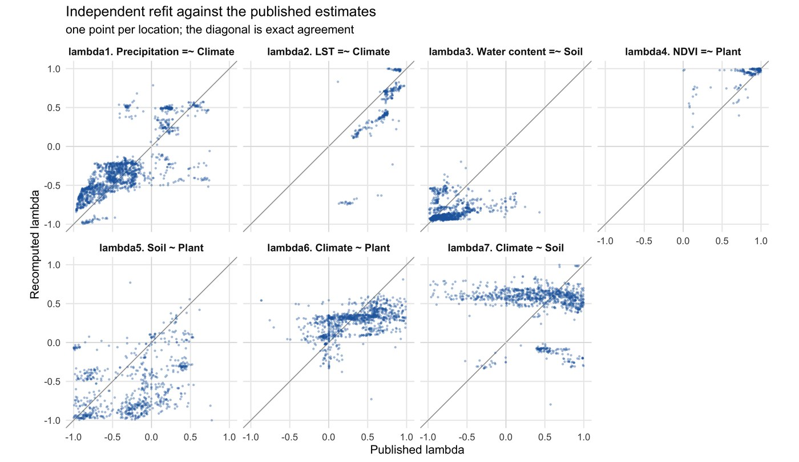
fig08 — the independent refit against the published estimates, one point per
location. The diagonal is exact agreement.
How to read this result
The refit reproduces the measurement half of the model well and the structural half poorly.
The four measurement pathways agree in sign at 93–100 % of locations and correlate 0.31 to
0.83; the three structural pathways agree in sign at 72–82 % and one of them, climate on
soil, does not correlate at all. Weighted across every comparable location, sign agreement is
87.8 %.
!What that split means
Loadings are pinned by the correlation between an indicator and its latent, so a
measurement path is robust to how the rest of the model is written. A structural path
between two latents depends on how both latents were constructed, so any difference
in the specification propagates straight into it. The pattern in the table is what you
would expect if the reconstruction in §2.4 has the right variables and not quite the right
model — which is exactly the claim being made for it. Read the structural surfaces on this
page as the published ones (they are, in fig03); read the refit as evidence that the
method behaves as described, not as an independent confirmation of the estimates.
Demo run
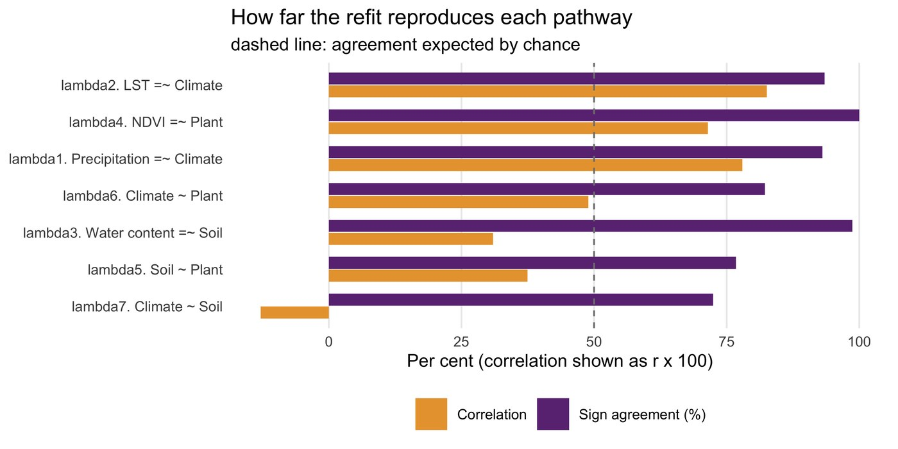
fig09 — agreement per pathway. Every bar clears chance; the measurement paths
clear it comfortably.
Step 4
Pathway assessment and significance
What this step does
Three questions of the seven surfaces: what does the distribution of each coefficient look
like, where is it significant, and how much of the study area does it actually describe.
Code
R/01-helpers.R · the reporting conventions
# Table 2's summary: mean [min, max] over the plotted range, and the share of
# locations whose p-value clears SIG_LEVEL — over a different denominator.
summarise_lambda <- function(lambda, p, range = LAMBDA_PLOT_RANGE,
alpha = SIG_LEVEL) {
v <- lambda[is.finite(lambda) & lambda >= range[1] & lambda <= range[2]]
pv <- p[is.finite(p)]
data.frame(n_in_range = length(v), mean = mean(v), min = min(v), max = max(v),
n_p = length(pv), pct_significant = 100 * mean(pv < alpha))
}
fig04 — where each pathway is significant. The measurement paths are green
almost everywhere; the structural paths are not.Demo run
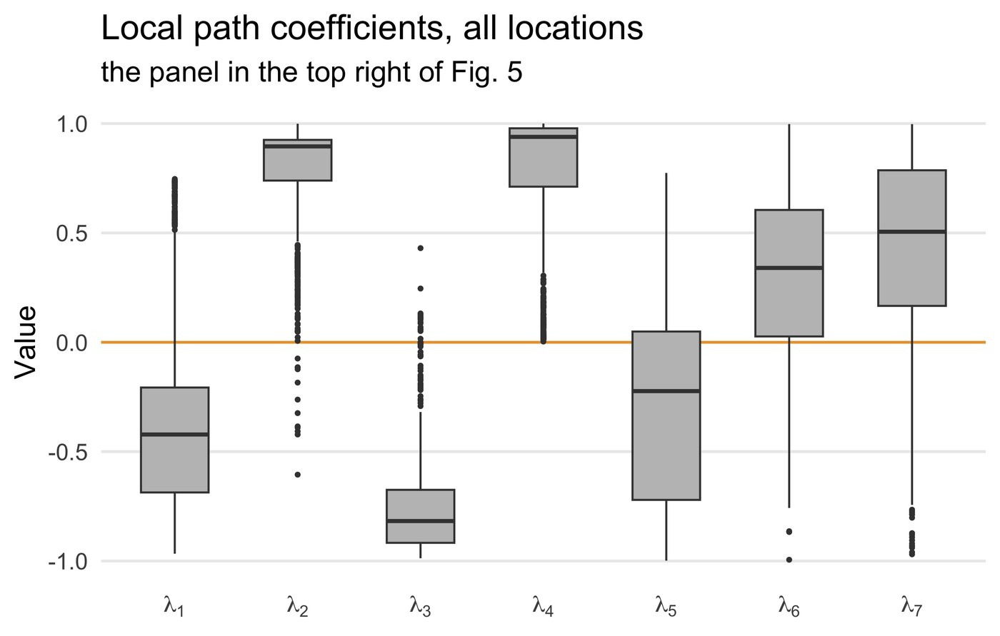
fig05 — the boxplot from the top right of Fig. 5, over the estimates inside
[−1, 1].
Demo run
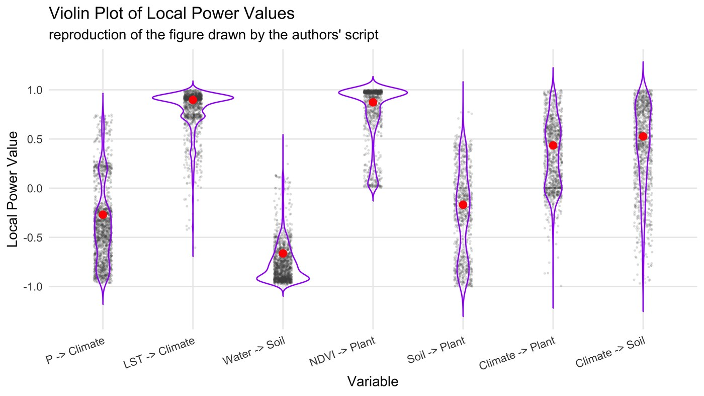
fig06 — the authors' own violin plot, redrawn from
data/original-violin-plot.R as they wrote it: jittered points, purple violins,
red mean markers nudged upwards.Demo run
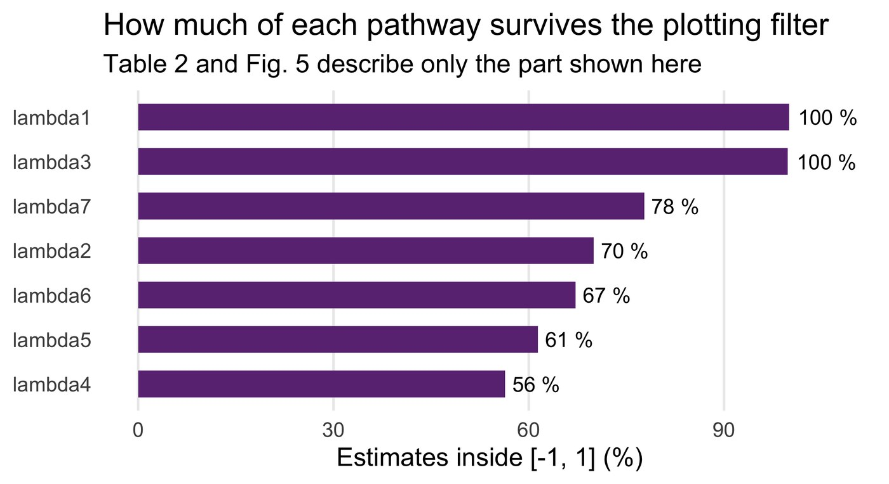
fig07 — how much of each pathway survives the [−1, 1] filter. λ₄ keeps
56 %; λ₁ keeps everything.
How to read this result
Two of these panels carry a warning rather than a finding. The maps in fig03 and fig04 look
complete, but λ₄ is drawn at 56 % of locations and λ₅ at 50 % — the rest are either
missing or outside the plotted range. A reader of the published figure has no way to tell the
difference between a location that was estimated as unremarkable and one that was dropped, so
results/map-coverage.csv reports the coverage of every panel explicitly.
Step 5
Model evaluation, and the cost of the radius
What this step does
The article evaluates LPA by comparing local coefficients against global ones. This pipeline
adds the check the article's own limitations section asks for: how much of the answer is
decided by the radius chosen in Step 1.
Code
config/project-config.R and R/50-radius-sensitivity.R
RADIUS_SENSITIVITY <- c(400, 500, 600, 705.29, 800, 900)
# Fitting every location at six radii would take the best part of an hour,
# so the check runs on a fixed random subsample.
for (r in RADIUS_SENSITIVITY) {
for (k in seq_along(idx)) {
sub <- d[neighbours_within(d, idx[k], r), SEM_VARS, drop = FALSE]
f <- fit_local_sem(sub[stats::complete.cases(sub), , drop = FALSE])
L[k, ] <- f$lambda
}
}
Example output
== Step 50 — radius sensitivity ==========================
150 locations at 6 radii: 400, 500, 600, 705.29, 800, 900 km
r = 400.00 km: median 248 neighbours, 88 % converged, mean |lambda| sd 0.286
r = 500.00 km: median 362 neighbours, 88 % converged, mean |lambda| sd 0.334
r = 600.00 km: median 480 neighbours, 92 % converged, mean |lambda| sd 0.270
r = 705.29 km: median 604 neighbours, 93 % converged, mean |lambda| sd 0.254
r = 800.00 km: median 723 neighbours, 92 % converged, mean |lambda| sd 0.222
r = 900.00 km: median 870 neighbours, 94 % converged, mean |lambda| sd 0.222
wrote results/radius-sensitivity.csv (42 rows)
Precipitation =~ Climate mean lambda -0.381 to -0.298 across radii, sign stable
LST =~ Climate mean lambda 0.184 to 0.752 across radii, sign stable
Water content =~ Soil mean lambda -0.888 to -0.825 across radii, sign stable
NDVI =~ Plant mean lambda 0.869 to 0.988 across radii, sign stable
Soil ~ Plant mean lambda -0.649 to -0.348 across radii, sign stable
Climate ~ Plant mean lambda 0.258 to 0.307 across radii, sign stable
Climate ~ Soil mean lambda 0.480 to 0.636 across radii, sign stable
The same 42 rows, pivoted to one row per radius — this is what
tables/table-radius-sensitivity.tex typesets:
Radius (km)
Median neighbours
λ₁
λ₂
λ₃
λ₄
λ₅
λ₆
λ₇
400
248
−0.381
0.752
−0.829
0.869
−0.348
0.301
0.636
500
362
−0.314
0.498
−0.825
0.910
−0.424
0.307
0.552
600
480
−0.349
0.508
−0.856
0.951
−0.517
0.273
0.575
705.29
604
−0.350
0.419
−0.875
0.933
−0.578
0.272
0.538
800
723
−0.310
0.350
−0.875
0.983
−0.625
0.269
0.487
900
870
−0.298
0.184
−0.888
0.988
−0.649
0.258
0.480
Radius sensitivity: the seven mean path coefficients recomputed at six local ranges. Signs are stable throughout; two of the seven magnitudes are not.
How to read this result
No pathway changes sign anywhere between 400 and 900 km, which is the reassuring half
of the result: the direction of every arrow is a property of the plateau rather than of the
radius. The magnitudes are another matter. Three pathways barely move — precipitation on
climate, water content on soil, climate on plant all shift by less than 0.09 — while the LST
loading falls from 0.752 to 0.184 as the window widens, and soil on plant nearly doubles in
strength. Both drift monotonically, which is the signature of a coefficient being averaged
over progressively more heterogeneous territory rather than of noise.
Agreement with the published surfaces is also highest near the chosen radius: correlations
for the LST and NDVI loadings peak at 600–705 km (0.90 and 0.91 at 600 km) and fall
away at 800 and 900 km. That is weak independent support for 707.29 km being the
radius behind the published numbers, arrived at without using it.
✓Report this table, not just the radius
The article's limitations section notes that choosing a different local range may change
the results, and leaves it there. Running the model at five more radii costs four minutes
on a subsample and converts that caveat into a measurement: which of your conclusions
survive the choice, and which are artefacts of it. On this case the signs survive and two
of the seven magnitudes do not.
3.4 Reading the Results Together
The pathways are local
every global coefficient is
significant at p < 0.01, yet six of the seven local ranges cross zero — the
strongest, soil on plant, runs from −0.998 to +0.774 around a global −0.528.
Measurement is stable, structure is not
the four
indicator loadings are significant at 94.4–98.3 % of locations; the three latent-to-latent
pathways at 62.4–70.1 %. Where climate acts on soil, it does so somewhere rather than
everywhere.
And the maps are partial
between 50 % and
96 % of locations are drawn per panel once missing and out-of-range estimates are
removed. Coverage belongs in the caption.
Demo run
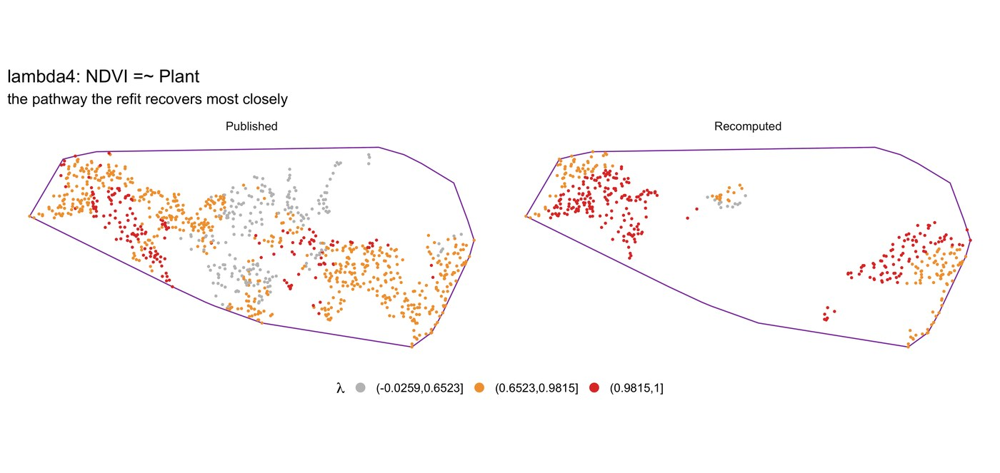
fig10 — the NDVI loading, published and refitted, and an honest picture of how far
the reproduction goes. Where both panels have a value the two agree in sign at every one of the
380 comparable locations, and both put the strongest loadings along the western margin. They do
not cover the same ground: each panel drops the locations whose own estimate leaves
[−1, 1], and the two runs strain at different places, so the refit is blank through the
centre where the published surface is dense. Click to enlarge.
The three findings above point the same way. LPA earns its keep not by producing a better number
than a global SEM but by showing that the number was never single — and the same evidence that
makes that case also limits how far any one local coefficient should be pushed. A coefficient
estimated from 596 overlapping neighbours, significant at 62 % of locations, drawn on 64 %
of the study area and moving by 0.16 when the radius changes is good evidence of spatial
heterogeneity in the climate-to-soil pathway. It is weak evidence about any particular valley.
◆What to claim, and what not to
Claim: the association between these variables varies across the plateau by more than
a global model can express, with a consistent geography — the vegetation loading strongest in
the west and north, the climate–soil pathway concentrated in the centre.
Do not claim: that a coefficient at one location is an estimate for that location
alone. Neighbouring fits share most of their data by construction, so the surfaces are smooth
whether or not the underlying process is.
Report alongside: the radius and the edge correction that produced it, the share of
locations that converged, the share drawn on each map, and the sensitivity table. Four numbers,
and they turn a set of attractive maps into a result someone else can check.
4 Adaptation, Writing & Reproducibility
4.1 Port to Your Domain
LPA needs point locations, a set of observed variables and a causal diagram worth testing. It
does not care whether the variables are ecological — the same structure applies to house prices and
amenities, or to exposure, deprivation and health.
What to edit
Setting
What to put there
INPUT_FILE, COORD_X, COORD_Y
your point table and its coordinate columns. Standardise the variables first; the
pipeline does not do it for you.
SEM_MODEL, SEM_VARS
the causal diagram, in lavaan syntax. Give every latent at least two
indicators — the identification problem in §2.4 is not specific to this case.
PATHS
the pathways you want reported, named as lavaan names them. This drives
the tables, the maps and the tests together.
PROJECTION
"equirect" for a study area of a few thousand kilometres;
"degrees" if you have already projected the coordinates properly.
K_CORRECTION, K_WINDOW
leave at "border" and "rectangle" unless you have a reason,
and report what you used. §3.3 Step 1 shows the range these choices span.
MIN_LOCAL_N
the smallest neighbourhood you will accept a fit from. A structural equation model
with 17 free parameters needs considerably more than 17 observations.
RADIUS_SENSITIVITY
a spread either side of your estimated range. Run it before you write the discussion,
not after a reviewer asks.
The configuration entries to change when porting the model to another study area. Everything else in the pipeline follows from these.
!Three failure modes worth anticipating
The radius swallows the study area. If the estimated range covers most of your data,
every local model is nearly the global model and the surfaces will be flat. Check the median
neighbourhood count that Step 20 prints before going further.
The model does not converge locally. A specification that fits the full dataset can
fail on a subset with less variation. The pipeline records NA and moves on; if the failure rate
is high, the specification is too ambitious for the local sample size, not the other way
around.
Coefficients escape [−1, 1]. A standardised loading above one is possible with
correlated factors, but a value of 3,910 is a fit that has come apart. Filtering them out for
the figures is reasonable; doing so without saying how many were removed is not.
4.2 Write the Paper
Manuscript skeleton
Section
What goes in it
From
Method — local range
Ripley's K, Besag's L, the correction you used and the range it gave
results/optimal-range.csv, figs/fig01
Method — local model
the SEM specification and the neighbourhood rule
config/project-config.R
Results — the surfaces
one map per pathway, significance beside it
figs/fig03, figs/fig04
Results — the summary
local mean [min, max] against the global coefficient
A manuscript skeleton for reporting an LPA analysis, with the output file behind each section.
Manuscript outline
manuscript outline
1 Introduction — associations between variables are assumed constant over
space; path analysis is global; the contribution (3 aims)
2 LPA model — 2.1 The optimal local range (Ripley's K, Besag's L)
2.2 The local structural equation model
2.3 Estimation at every location; the surfaces
2.4 Assessment: significance, convergence, coverage
3 Case & data — study area, the observed variables, the causal diagram
4 Results — 4.1 the local range and what fixes it
4.2 the seven pathway surfaces and their significance
4.3 local against global coefficients
4.4 sensitivity to the radius
5 Discussion — what varies in space and what does not; the identification
limits of the reconstructed specification
6 Conclusions — the local pathways, and the radius they depend on
Questions a reviewer will ask
Why that radius? → results/optimal-range.csv shows the estimate and the three
alternatives. Would a different radius change the conclusion? →
tables/table-radius-sensitivity.tex; on this case the signs hold and two magnitudes
move. How many local models failed? → 134 of 1,801 here, in
results/local-fit-diagnostics.csv. Is the map showing every location? →
results/map-coverage.csv, and no. Is this just a global model in disguise? →
tests/test-02 checks that 59 % of locations sit more than 0.1 away from the
global estimate.
4.3 Final Reproducibility Package
Code
numbered scripts in R/, one
command in run-all.R, every choice in config/project-config.R
Data
data/lpa-tibetan-plateau.csv
— the 1,801 published locations, carrying both the observed variables and the authors' own
output; data/LSEM_out.xlsx as distributed;
data/original-violin-plot.R unedited
Results
10 CSV files in results/,
4 LaTeX tables in tables/, 10 figures in figs/ as both PDF and
PNG
Verification
42 assertions —
Rscript run-all.R test — of which 31 are against the printed article; the tests
prepare their own inputs, so they run on a fresh unpack
Environment
env/session-info.txt,
written by every run
References & credits
Demo outputs were generated by the scripts in this folder with R 4.6.0,
lavaan 0.7.2 and spatstat.explore 3.8.1. Reference figures are reproduced
from the article, which is open access under CC BY, for comparison. The data file and the
violin-plot script were provided by the authors.
Hu J, Qu R, Song Y, Wu P (2025). Local pathways of association.
International Journal of Applied Earth Observation and Geoinformation 139:104531.
doi:10.1016/j.jag.2025.104531
· PDF
(source of the model, the case study, the Fig. 1, Fig. 4 and Fig. 5 reference images, and of
every value locked in tests/test-01)
Rosseel Y (2012). lavaan: an R package for structural equation modeling.
Journal of Statistical Software 48(2):1–36.
doi:10.18637/jss.v048.i02 ·
CRAN
(the estimator behind every local fit)
Baddeley A, Rubak E, Turner R (2015). Spatial Point Patterns: Methodology and Applications
with R. Chapman and Hall/CRC.
spatstat
(Ripley's K, and the edge corrections that decide the local range)
Ripley BD (1977). Modelling spatial patterns. Journal of the Royal Statistical Society B
39(2):172–192.
doi:10.1111/j.2517-6161.1977.tb01615.x
(the K function)
Besag J (1977). Contribution to the discussion of Dr Ripley's paper.
Journal of the Royal Statistical Society B 39(2):193–195.
(the L transform whose peak defines the local range)
Anselin L (1995). Local indicators of spatial association — LISA.
Geographical Analysis 27(2):93–115.
doi:10.1111/j.1538-4632.1995.tb00338.x
(the local-statistics tradition LPA extends to path analysis)